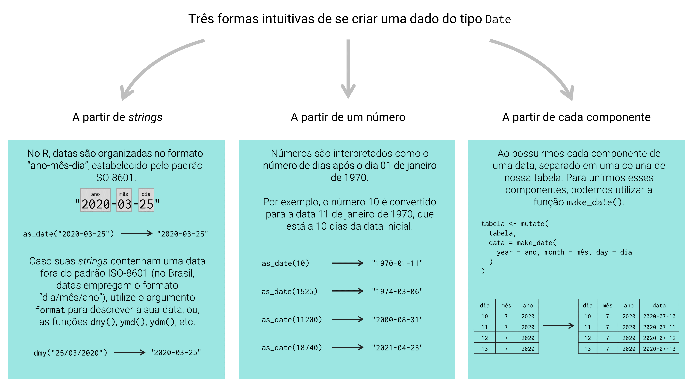
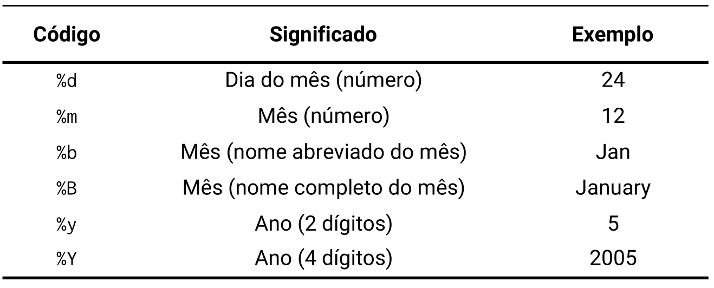
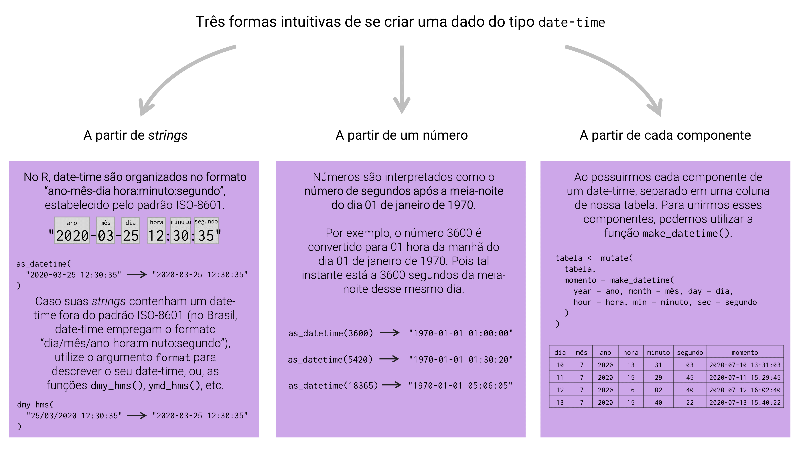
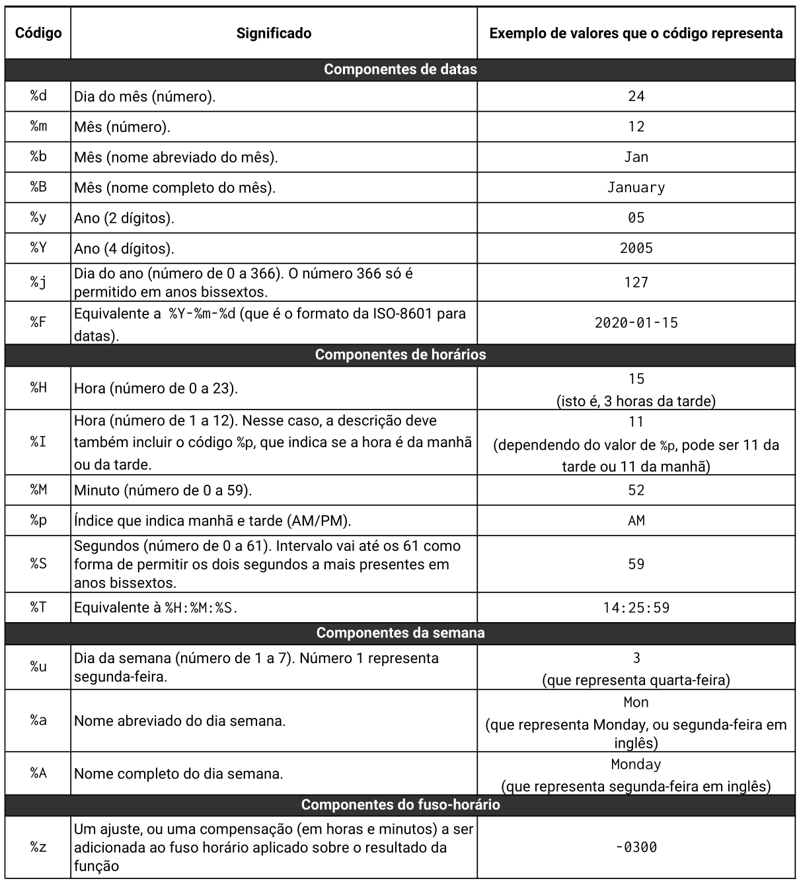
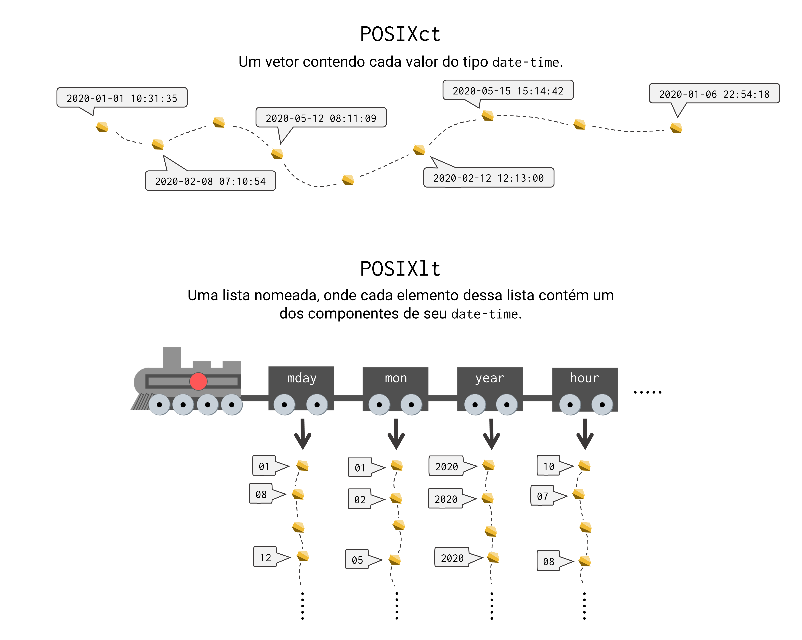
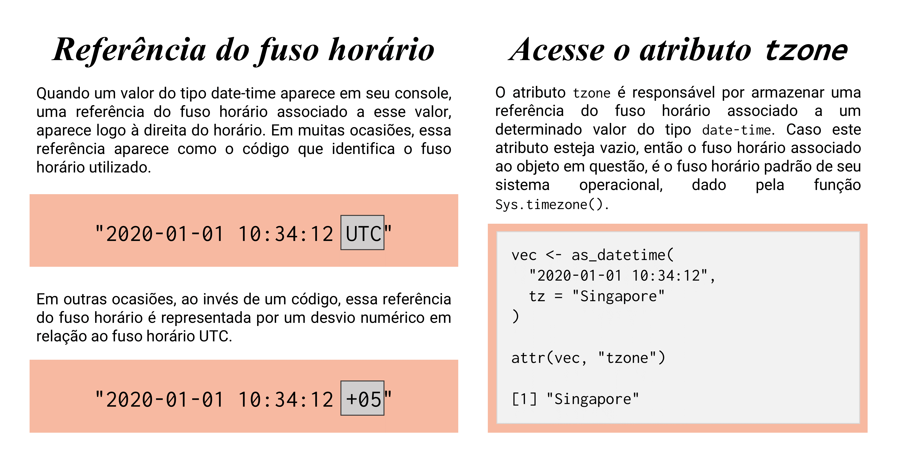
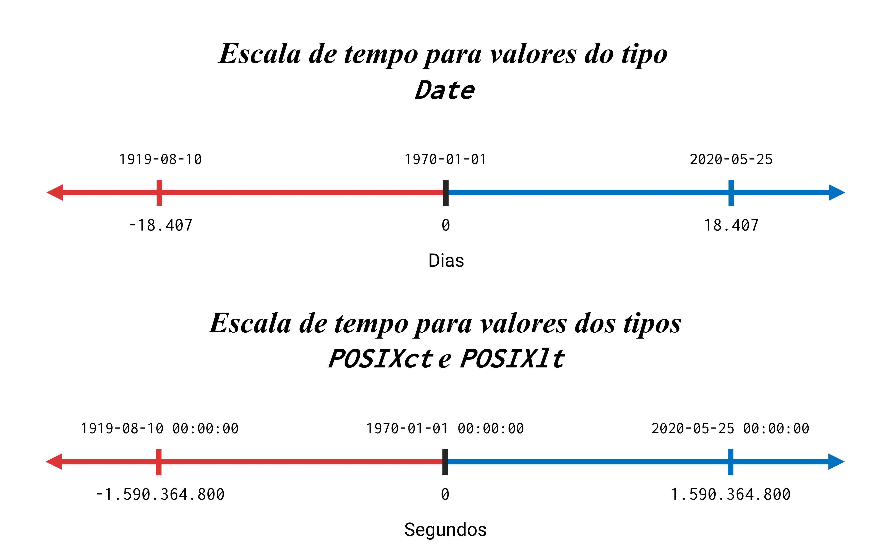

library(lubridate)12 Introdução à variáveis de tempo com lubridate
12.1 Introdução e pré-requisitos
Variáveis de tempo são aquelas que guardam informações que se encontram em alguma unidade de tempo. Exemplos são: datas (i.e. 20 de março de 2020), ou horários - que preferencialmente são acompanhados por uma data (i.e. 11:45 da manhã do dia 12 de fevereiro de 2001; ou, 12/02/2001 11:45:00), ou ainda, a duração (ou o tempo) de algum evento (12 segundos, 12 dias, 2 semanas, 1 mês e meio, etc.).
Tais variáveis podem ser interpretadas no R por meio de quatro tipos de dados diferentes, sendo eles: Date, POSIXlt, POSIXct e difftime. Logo, neste capítulo, vamos focar nesses quatro tipos de dados, e, introduzir várias ferramentas e operações comumente aplicadas sobre eles. Parte dessas ferramentas advém do pacote lubridate e, portanto, para acompanhar os exemplos deste capítulo, você deve (após instalar esse pacote em sua máquina) chamar por esse pacote em sua sessão, através do comando library().
12.2 O pacote lubridate
Como é bem descrito por RIPLEY; HORNIK (2001) e GROTHENDIECK; PETZOLDT (2004), desde sua versão 1.9, o R oferece “de fábrica” um excelente suporte para variáveis de tempo. Suas funções são capazes de lidar muito bem com diferenças entre fusos horários, além de incluírem anos bissextos e horários de verão. Porém, mesmo com esse potencial, essas funções (as.Date(), as.POSIXct(), strptime(), dentre outras) tendem a aplicar definições muito formais, tornando-as assim, pouca intuitivas para muitos usuários.
Por esse motivo, o pacote lubridate tem tido muito sucesso ao longo da comunidade, ao prover funções que realizam grande parte do trabalho irritante com essas funções. Ou seja, no fundo, várias das funções do pacote lubridate são apenas wrappers, isto é, são construídas a partir das funções do pacote básico do R. Significa que o pacote lubridate foi criado, em grande parte, com o intuito de facilitar o nosso trabalho com as ferramentas que o R já oferece, ao invés de remodelá-las por completo.
Portanto, ao longo deste capítulo, você irá aprender primeiro sobre as funções do pacote lubridate, e, em seguida, as funções básicas do R são apresentadas para aqueles que desejam conhecer mais a fundo tal sistema. Dessa forma, nós estaremos apresentando primeiro, o atalho, e, em seguida, o caminho completo.
12.3 Datas com o tipo Date
No R, datas são normalmente interpretadas através do tipo de dado Date. Temos 3 métodos principais de se criar uma data no R (existem outros métodos menos intuitivos1), os quais estão resumidos na Figura 12.1 abaixo, e que são apresentados a seguir: 1) a partir de strings (um vetor do tipo character); 2) a partir de cada componente da data (dia, mês e ano); e 3) a partir de números.

Dentre as funções dos pacotes básicos do R, a função as.Date() é a principal função responsável por criar vetores do tipo Date. Todavia, ao longo dessa seção, estaremos focados nas funções do pacote lubridate, em especial, a função as_date(). De qualquer forma, saiba que, no fim das contas, as funções desse pacote vão utilizar a função as.Date() para criar o vetor contendo as suas datas. As funções as_date() e as.Date() são muito semelhantes entre si, logo, grande parte do conhecimento mostrado em as_date(), pode ser diretamente aplicado em as.Date().
Ao longo das próximas seções, você pode rapidamente perceber que a formação de dados do tipo Date (assim como dos tipos POSIXct e POSIXlt) no R, envolve o ato de coerção de vetores que se encontram em outros tipos (como character ou double) para o tipo Date. Em outras palavras, não é possível criarmos diretamente um vetor do tipo Date. O motivo para tal prática, pode ser atribuído às diversas maneiras em que uma mesma data (além das outras variáveis de tempo) pode ser escrita, ou representada. Por essa diversidade, o R busca oferecer flexibilidade aos seus usuários, através de diferentes métodos de coerção. A Figura 12.1, resume os principais métodos que vamos aprender ao longo dessa seção, além de algumas características importantes que envolvem o tipo Date.
12.3.1 A partir de strings
Como exemplo inicial, podemos fornecer à função as_date() (do pacote lubridate), a data 01 de abril de 2020 como um string. Repare abaixo, que o resultado final da operação é um vetor do tipo Date (e não do tipo character).
d <- as_date("2020-04-01")
d[1] "2020-04-01"class(d)[1] "Date"Entretanto, você talvez tenha achado estranho o formato em que a data foi escrita na função as_date(). Pois no Brasil, datas são normalmente escritas no padrão “dia/mês/ano” (ex: 01/04/2020), e não “ano-mês-dia”. Este é o formato estipulado pelo padrão internacional ISO-8601, que é o padrão adotado pelo R. Ou seja, no R, datas são manipuladas, estocadas, fornecidas e apresentadas no formato “ano-mês-dia”.
Você irá rapidamente perceber que, muitos países podem escrever uma mesma data de maneiras muito diferentes. Por exemplo, nos EUA, datas são usualmente escritas no formato “mês-dia-ano” (ex: 02-18-2021), mas também aparecem muitas vezes em sua forma extensa (ex: February 18, 2021). Em algumas regiões da Espanha, datas são escritas no formato “ano/dia/mês” (ex: 2020/15/08). Também não é incomum encontrarmos em países nórdicos (Suécia, Finlândia, Dinamarca), datas escritas com o uso de pontos separando cada componente (ex: 2020.08.15).
Toda essa variedade só torna o nosso trabalho mais complicado, especialmente se nós não sabemos qual a origem, ou, o padrão adotado por essas datas. E não há nada que você possa fazer a respeito, a não ser, identificar por conta própria o padrão adotado e ajustar a função empregada de acordo com esse padrão.
12.3.2 O que devo fazer se minhas datas se encontram em um formato diferente?
Portanto, caso você possua um conjunto de datas como strings (ou seja, em um vetor do tipo character), e, essas datas estejam em um formato diferente do estipulado pela ISO-8601, você tem 2 opções rápidas para transportar corretamente essas datas para o tipo Date.

Primeiro, todas as funções no R que lidam com variáveis de tempo, geralmente oferecem um argumento format, no qual você pode definir o formato, ou o padrão adotado por suas datas. Logo, você precisa apenas definir o argumento format em as_date(), ou em qualquer outra função que você esteja utilizando para essa coerção.
Segundo, você também pode utilizar as funções rápidas do pacote lubridate, ymd(), dmy(), dym() e mdy(), que já possuem uma ordem implícita, ou um format padrão. Dessa maneira, você economiza certo tempo, ao não ter que se preocupar com o argumento format nessas funções.
Por exemplo, suponha que você possua um conjunto de datas escritas no Brasil, guardadas no vetor datas, e que você deseja converter esse vetor (que se encontra no momento, no tipo character) para o tipo Date. Como os componentes da data estão na ordem “dia \(\rightarrow\) mês \(\rightarrow\) ano”, eu utilizo a função dmy() para ler essas datas.
datas <- c("15/03/2020", "16/03/2020", "18/03/2020", "24/03/2020")
dmy(datas)[1] "2020-03-15" "2020-03-16" "2020-03-18" "2020-03-24"Isso significa que, a ordem na qual as letras “d”, “m” e “y” aparecem no nome da função, representa a ordem adotada pelo argumento format dessa função. Em outras palavras, a letra “d” simboliza o “dia”; a letra “m” por sua vez, o “mês”; e a letra “y”, o “ano”, ou, em inglês, “year”. Ou seja, a função dmy() espera como input, datas cujos componentes estejam na ordem “dia \(\rightarrow\) mês \(\rightarrow\) ano” (ou “d \(\rightarrow\) m \(\rightarrow\) y”). Já a função ymd(), tem como expectativa, datas cujos componentes estejam na ordem “ano \(\rightarrow\) mês \(\rightarrow\) dia” (ou “y \(\rightarrow\) m \(\rightarrow\) d”).
Portanto, as funções rápidas dmy(), ymd() e suas irmãs, possuem implicitamente uma ordem esperada para os componentes de suas datas. Para mais, essas funções identificam automaticamente qualquer caractere que não seja um dígito, e os trata como os delimitadores que separam cada componente da data. Logo, não importa se cada componente está sendo separado por um hífen (-), ponto (.), cifrão ($) ou barra inclinada (/), essas funções serão capazes de detectar esses caracteres e ignorá-los durante a conversão.
Como já foi descrito acima, a segunda alternativa seria definirmos explicitamente o argumento format em as_date(). Neste argumento, você deve fornecer uma pequena definição2 que descreve o padrão no qual a sua data se encontra. Para construir tal definição, você irá utilizar um conjunto de códigos, que são formados pelo símbolo de porcentagem acompanhado de uma letra específica. Cada um desses códigos, podem representar um dos três componentes de uma data (dia, mês e ano). A Figura 12.2 apresenta um resumo desses códigos.
Tendo os códigos acima, se uma data no Brasil é escrita no formato “dia/mês/ano”, uma descrição que representa tal padrão é "%d/%m/%Y". Como um outro exemplo, se temos as datas "2021, 30-12" e "97,10,January", podemos utilizar respectivamente os valores "%Y, %d-%m" e "%y,%d,%B" para descrever os padrões adotados por cada uma. Veja os exemplos abaixo:
datas <- c("15/03/2020", "16/03/2020", "18/03/2020", "24/03/2020")
as_date(datas, format = "%d/%m/%Y")[1] "2020-03-15" "2020-03-16" "2020-03-18" "2020-03-24"as_date("2021, 30-12", format = "%Y, %d-%m")[1] "2021-12-30"as_date("97,10,January", format = "%y,%d,%B")[1] "1997-01-10"as_date("12-30-1997", format = "%m-%d-%Y")[1] "1997-12-30"Um detalhe importante é que os códigos %b e %B são capazes de representar apenas os nomes dos meses em inglês (ex: april, december, october). Por isso, se as suas datas possuem os nomes dos meses, em qualquer outra língua que não seja o inglês, você terá que, obrigatoriamente, traduzir esses nomes para o inglês, ou convertê-los para sua versão numérica (março = 03; abril = 04; maio = 05; e assim por diante).
12.3.3 A partir de cada componente
Também é muito comum, termos cada um dos componentes separados em uma coluna específica de nossa tabela. Como exemplo, temos abaixo a tabela registros, onde o ano, mês e dia estão separados em uma determinada coluna da tabela.
Para unirmos esses componentes em uma data, nós podemos utilizar a função make_date(). Por meio dessa função, você precisa apenas conectar os argumentos year, month e day, aos nomes das colunas que contém o ano, mês e dia (respectivamente), de cada observação da tabela, como demonstrado abaixo.
registros <- tibble(
valor = c(5.50, 4.25, 1.32, 24.10, 12.50),
dia = c(5, 6, 8, 12, 15),
mes = c(4, 4, 4, 4, 4),
ano = c(2021, 2021, 2021, 2021, 2021)
)
registros <- mutate(
registros,
data = make_date(year = ano, month = mes, day = dia)
)
registros# A tibble: 5 × 5
valor dia mes ano data
<dbl> <dbl> <dbl> <dbl> <date>
1 5.5 5 4 2021 2021-04-05
2 4.25 6 4 2021 2021-04-06
3 1.32 8 4 2021 2021-04-08
4 24.1 12 4 2021 2021-04-12
5 12.5 15 4 2021 2021-04-15Além disso, é importante frisar que, os seus componentes não precisam necessariamente estar dentro de um data.frame. Dito de outra forma, você também pode fornecer cada componente de sua data como um vetor. Veja o exemplo abaixo:
dias <- c(1, 4, 12, 15, 7)
mes <- c(1, 1, 2, 2, 2)
ano <- c(2020, 2020, 2020, 2020, 2021)
make_date(year = ano, month = mes, day = dias)[1] "2020-01-01" "2020-01-04" "2020-02-12" "2020-02-15" "2021-02-07"12.3.4 A partir de números
Para mais, o R também nos permite criar uma data a partir de um número. Por exemplo, eu posso criar a data "2020-04-01" (01 de abril de 2020) através do número 18353. Repare abaixo, que ao invés de um vetor do tipo double contendo o número inicial (18353), a operação me retorna um vetor do tipo Date, contendo a data supracitada.
d <- as_date(18353)
d[1] "2020-04-01"class(d)[1] "Date"Quando você fornece um vetor numérico à função as_date(), todos os números contidos neste vetor são tratados como o número de dias desde a data "1970-01-01", ou, 01 de janeiro de 1970. Em outras palavras, o R utiliza uma “escala de dias”, e a data "1970-01-01" representa a origem, ou o ponto zero dessa escala (para representar dias anteriores a essa data, utilizamos números negativos). Nós denominamos essa data, como a data de origem.
Portanto, o número 18353 nos retorna a data "2020-04-01", pelo fato de que este dia está a 18353 dias de distância da data "1970-01-01". Caso você ainda sinta certa confusão, visite a seção Como as variáveis de tempo são interpretadas pelo R ?, que busca prover uma descrição mais formal e mais detalhada dos conceitos de data de origem e escala de tempo.
12.3.5 Fique atento aos tipos de dados empregados!
Vale a pena destacar que, apesar de serem apresentadas a você como strings, dados do tipo Date são guardados e interpretados de uma maneira completamente diferente dos dados do tipo character. Ou seja, quando valores do tipo Date aparecem em seu console, eles sempre aparecem contornados por aspas duplas, como se fossem dados do tipo character. E não há qualquer informação aparente no console, que te indique qual dos dois tipos (Date ou character) está sendo empregado sobre esses valores.
Por isso, é muito importante que você esteja atento à forma como o R está interpretando os seus dados. Use e abuse de funções e de testes lógicos que possam lhe assegurar que os seus dados estão sendo interpretados da maneira esperada! Tendo essas considerações em mente, a forma mais rápida de identificarmos se um vetor é do tipo character, ou do tipo Date, é descobrirmos a sua classe, por meio da função class(). Repare no exemplo abaixo, que o primeiro valor pertence ao tipo character, enquanto o segundo, está sendo interpretado pelo tipo Date.
texto <- "2020-08-01"
data <- as.Date("2020-08-01")
class(texto)[1] "character"class(data)[1] "Date"### Um teste lógico para o tipo Date
class(texto) == "Date"[1] FALSEclass(data) == "Date"[1] TRUEPor outro lado, caso as suas datas estejam dentro de um tibble, tal problemática perde um pouco de sua importância. Pois como descrevemos na seção tibble’s como uma alternativa moderna aos data.frame’s, quando um tibble aparece em seu console, ele sempre disponibiliza uma pequena descrição logo abaixo do nome de cada coluna, indicando o tipo de dado contido nela. Portanto, no exemplo abaixo, podemos rapidamente identificar pela descrição <date>, que os dados presentes na coluna data pertencem ao tipo de dado Date.
library(tibble)
tibble(
data = dmy(c("20/05/2020", "21/05/2020", "22/05/2020", "23/05/2020"))
)# A tibble: 4 × 1
data
<date>
1 2020-05-20
2 2020-05-21
3 2020-05-22
4 2020-05-2312.4 Datas, horários e fusos horários com os tipos POSIXct e POSIXlt
Em várias ocasiões, empresas, agentes e governos, precisam registrar o instante de ocorrência de algum episódio com um alto nível de precisão. Com isso, eu quero dizer que em certas situações, precisamos não apenas da data, mas também do horário e do fuso horário em que certo evento ocorre. Para isso, o R nos oferece os tipos POSIXct e POSIXlt, que são capazes de guardar não apenas datas, mas também horários além de fusos horários.

POSIXct e POSIXltNo fundo, o R utiliza as funções as.POSIXct() e as.POSIXlt() para criar um objeto dos tipos POSIXct e POSIXlt, respectivamente. Portanto, mesmo que as ferramentas apresentadas nessa seção pertençam (em sua maioria) ao pacote lubridate, saiba que no fundo, as funções as.POSIXct() e as.POSIXlt() são empregadas para criar o seu vetor do tipo POSIXct e POSIXlt.
Dentro da comunidade de R, vários usuários costumam se referir aos tipos POSIXct e POSIXlt, em uma forma mais intuitiva. Sendo o termo date-time, o mais utilizado para tal referência. Portanto, date-time é um sinônimo (ou uma gíria) utilizado para se referir à “espécie” de dado (isto é, uma data acompanhada de um horário e de um fuso horário) armazenado pelos tipos POSIXct e POSIXlt.
Por isso, ao longo dessa seção, quando estivermos descrevendo características gerais que se aplicam a ambos os tipos, vamos utilizar o termo date-time como um sinônimo aos tipos POSIXct e POSIXlt. Por outro lado, quando estivermos descrevendo características específicas de cada um, vamos utilizar o nome do tipo correspondente.
12.4.1 Criando vetores do tipo date-time
Para criarmos um vetor contendo dados do tipo date-time, podemos utilizar exatamente os mesmos métodos empregados no tipo Date, com pequenas modificações. Isto é, podemos criar um vetor dos tipos POSIXct e POSIXlt: 1) a partir de strings; 2) a partir de números; e 3) a partir de cada componente deste date-time. Um resumo de tais métodos, além de algumas observações quanto ao tipo date-time, são apresentados na Figura 12.3.
Para realizar cada um desses métodos, o pacote lubridate nos oferece a função as_datetime(). Todavia, vale apontar que essa função sempre gera um vetor do tipo POSIXct como resultado. Por isso, se você deseja converter o seu objeto para o tipo POSIXlt, aplique a função as.POSIXlt() sobre o resultado de as_datetime().

date-time no R
12.4.2 A partir de strings
Assim como descrevemos durante as seções do tipo Date, o R segue as regras definidas no padrão internacional ISO-8601 para armazenar e interpretar suas variáveis de tempo. Esse padrão delimita que, dados do tipo date-time devem ser escritos no formato “ano-mês-dia hora:minuto:segundo”. A Figura 12.4, provê uma representação visual de tal formato.

date-time
Mais abaixo, temos um exemplo em que um objeto chamado dt é criado, com o objetivo de guardar o seguinte ponto no tempo: 10 horas, 40 minutos e 35 segundos do dia 01 de janeiro de 2020. Repare nesse exemplo, que nós não incluímos na string inicial qualquer informação a respeito do fuso horário utilizado. Mesmo assim, a função as_datetime() automaticamente configurou o horário com o fuso UTC, que corresponde à Coordinated Universal Time. Portanto, sempre que você não definir explicitamente um fuso horário, a função as_datetime() vai utilizar o fuso horário UTC.
Para mais, isso demonstra que não é necessário incluirmos o fuso horário utilizado, diretamente na string a ser fornecido. Pois tal informação é definida separadamente no argumento tz da função.
dt <- as_datetime("2020-01-01 10:40:35")
dt[1] "2020-01-01 10:40:35 UTC"Isso não significa que, as strings não devem ou não podem conter qualquer informação a respeito do fuso horário. Mas significa que essas informações serão, por padrão, ignoradas pela função, que vai utilizar o fuso UTC para qualquer input. Veja o exemplo abaixo, em que dois fusos horários diferentes são testados, e o mesmo resultado é gerado em ambos.
as_datetime("2020-01-01 10:40:35 Paris")[1] "2020-01-01 10:40:35 UTC"as_datetime("2020-01-01 10:40:35 America/Sao_Paulo")[1] "2020-01-01 10:40:35 UTC"Portanto, a maneira correta de definir o fuso horário a ser empregado, é por meio do argumento tz, como demonstrado abaixo:
as_datetime("2020-01-01 10:40:35", tz = "Europe/Paris")[1] "2020-01-01 10:40:35 CET"as_datetime("2020-01-01 10:40:35", tz = "America/Sao_Paulo")[1] "2020-01-01 10:40:35 -03"Fusos horários são usualmente fornecidos ao argumento tz por meio de um código (e.g. "WET", "UTC", "ROK", "CET", etc.), ou por meio de uma referência de região ou cidade específica (e.g. "Europe/Paris", "Pacific/Auckland", "America/Toronto", etc.). Para consultar a lista completa de valores reconhecidos pelo R, execute a função OlsonNames() em seu console.
Dito de outra forma, valores como "ROK" (abreviação para Republic of Korea), "CET" (Central European Time), "America/Sao_Paulo" (cidade de São Paulo) e "Pacific/Auckland" (cidade de Auckland), são aceitos pelo argumento tz, porque eles estão inclusos no resultado da função OlsonNames(). Em contraste, valores como "São Paulo", "WST", e "+11", não são aceitos pelo argumento tz, pois não estão presentes em OlsonNames().
as_datetime("2020-01-01 10:34:12", tz = "Asia/Qatar")[1] "2020-01-01 10:34:12 +03"as_datetime("2020-01-01 10:34:12", tz = "America/New_York")[1] "2020-01-01 10:34:12 EST"as_datetime("2020-01-01 10:34:12", tz = "Pacific/Auckland")[1] "2020-01-01 10:34:12 NZDT"### Quando incluímos um fuso horário desconhecido
### pelo R, a seguinte mensagem de erro aparece:
as_datetime("2020-01-01 10:34:12", tz = "WST")Error in C_force_tz(time, tz = tzone, roll) :
CCTZ: Unrecognized output timezone: "WST"12.4.3 O que devo fazer se meus dados se encontram em um formato diferente?
Da mesma maneira que uma mesma data pode ser escrita de várias formas, horários também podem assumir formatos diferentes. Sendo que, diferentemente das datas, algumas partes de um horário (hora, minuto e segundo) podem ser ignoradas, a depender da precisão de tempo necessária. De qualquer modo, em casos como este, as soluções a serem empregadas são exatamente as mesmas que descrevemos na seção O que devo fazer se minhas datas se encontram em um formato diferente?, que são:
Utilizar os códigos oferecidos pelo R no argumento
formatda função.Ou utilizar as funções rápidas do pacote
lubridate(dmy_h(),dmy_hm(),dmy_hms(), etc.) que possuem uma ordem implícita para cada componente.

date-time
A Figura 12.5 apresenta os principais códigos oferecidos pelo R para cada componente de um dado do tipo date-time. Porém, há vários outros códigos, os quais são menos comuns e, que por isso, foram omitidos dessa tabela. Você pode encontrar uma lista completa desses códigos, ao consultar a documentação interna da função strptime(), com o comando ?strptime.
Pelas informações dispostas na Figura 12.5, sabemos que o formato delineado pelo padrão ISO-8601, isto é, “ano-mês-dia hora:minuto:segundo”, pode ser descrito pelo padrão "%Y-%m-%d %H:%M:%S", ou, de forma mais sucinta, "%F %T". Como exemplo, repare abaixo que ambas as descrições geram os mesmos resultados, quando aplicadas sobre os valores presentes no vetor pontos:
pontos <- c("2018-06-15 08:11:05", "2018-07-22 21:09:05")
as_datetime(pontos, format = "%Y-%m-%d %H:%M:%S")[1] "2018-06-15 08:11:05 UTC" "2018-07-22 21:09:05 UTC"### Ou de forma análoga
as_datetime(pontos, format = "%F %T")[1] "2018-06-15 08:11:05 UTC" "2018-07-22 21:09:05 UTC"No caso do Brasil, valores do tipo date-time costumam se apresentar no formato “dia/mês/ano hora:minuto:segundo”. Logo, uma descrição capaz de representar tal formato é "%d/%m/%Y %H:%M:%S", ou então, uma alternativa mais curta é "%d/%m/%Y %T".
pontos_br <- c("15/06/2018 08:11:05", "22/07/2018 21:09:05")
as_datetime(pontos_br, format = "%d/%m/%Y %H:%M:%S")[1] "2018-06-15 08:11:05 UTC" "2018-07-22 21:09:05 UTC"### Ou de forma análoga
as_datetime(pontos_br, format = "%d/%m/%Y %T")[1] "2018-06-15 08:11:05 UTC" "2018-07-22 21:09:05 UTC"Vale ressaltar que, em todos os exemplos mostrados até agora, todos os componentes de um date-time foram fornecidos nas strings utilizadas como input. Dito de outra forma, em nenhum exemplo mostrado até o momento, os segundos, os minutos ou as horas estavam ausentes das strings utilizadas como input. Esse cenário perfeito nem sempre ocorre, e isso não necessariamente é um problema sério. Pois, em alguns processos, a empresa nem sempre precisa de uma precisão muito alta em seus registros de tempo.
Por exemplo, uma indústria de aço não recebe matérias primas a cada segundo. Muitas vezes, a firma encomenda um grande estoque de materiais, combustíveis e minérios ao final de cada mês. Por esse motivo, a firma talvez precise registrar apenas as horas e minutos do dia, em que cada entrega (ou carregamento de matéria-prima) chegou a sua sede, em um determinado mês.
Tendo isso em mente, se eu possuo a string abaixo, contendo o valor "2020-04-15 10:30", eu poderia utilizar a descrição "%F %H:%M" para descrever o formato em que esse valor se encontra. Contudo, uma alternativa eficiente e intuitiva, é utilizar a função ymd_hm(). Perceba pelo resultado abaixo, que ao não possuirmos um determinado componente de um dado do tipo date-time, esse componente faltante é preenchido por zeros.
dt <- "2020-04-15 10:30"
as_datetime(dt, format = "%F %H:%M")[1] "2020-04-15 10:30:00 UTC"ymd_hm(dt)[1] "2020-04-15 10:30:00 UTC"Do mesmo modo que descrevemos anteriormente, funções rápidas como ymd_hm() possuem uma ordem para cada componente que está implícita no nome dessa função. A novidade em relação às funções ymd(), dmy() e suas irmãs, é que essas funções focadas em dados do tipo date-time, incluem três novas letras que se referem a hora (h), minuto (m) e segundo (s). Portanto, sabemos pelo nome da função, que ymd_hm() espera um input onde os componentes se apresentam na ordem “ano \(\rightarrow\) mês \(\rightarrow\) dia \(\rightarrow\) hora \(\rightarrow\) minuto”.
Por isso, a função dmy_hms() é uma alternativa ideal para ler dados do tipo date-time que foram escritos segundo o padrão brasileiro. Pois essa função espera como input, um dado em que os componentes seguem a ordem “dia \(\rightarrow\) mês \(\rightarrow\) ano \(\rightarrow\) hora \(\rightarrow\) minuto \(\rightarrow\) segundo”. Veja o exemplo abaixo:
dts <- c("12/10/1998 19:19:32", "12/10/1998 22:15:09")
sem_segundo <- c("12/10/1998 19:19", "12/10/1998 22:15")
sem_minuto_e_segundo <- c("12/10/1998 19", "12/10/1998 22")
dmy_hms(dts)[1] "1998-10-12 19:19:32 UTC" "1998-10-12 22:15:09 UTC"dmy_hm(sem_segundo)[1] "1998-10-12 19:19:00 UTC" "1998-10-12 22:15:00 UTC"dmy_h(sem_minuto_e_segundo)[1] "1998-10-12 19:00:00 UTC" "1998-10-12 22:00:00 UTC"Para além dos códigos mais tradicionais, a parte inferior da Figura 12.5 descreve alguns códigos menos comuns, como o código %z. Esse código em específico, é capaz de identificar um ajuste (em horas e minutos) presente na string de input, e adicioná-lo ao fuso horário aplicado sobre o resultado da função. Porém, como veremos mais à frente, lidar com fusos horários não é algo muito simples, e para piorar, o cálculo aritmético por trás da adição de um ajuste com o código %z, é no mínimo, peculiar.
Portanto, o uso de ajustes representados pelo código %z, é algo mais complicado do que uma simples adição3. Sendo que, o cálculo aritmético aplicado por tal código, está demonstrado em detalhes na seção Quando fusos horários diferentes geram uma grande confusão. Por esses motivos, o código %z é algo difícil de se trabalhar, especialmente levando-se em conta que: em certas situações, o código %z gera resultados diferentes entre as funções as_datetime() e as.POSIXct().
Tal diferença, se baseia puramente no fato de que a função as_datetime() escolhe, por padrão, o fuso horário UTC, enquanto a função as.POSIXct(), tende a escolher o fuso horário padrão de seu sistema operacional (o qual não necessariamente é o fuso horário UTC). Como exemplo, temos abaixo um vetor chamado dt, que contém o instante: 8 horas do dia 01 de janeiro de 2020. Ademais, podemos identificar um ajuste negativo (ou “para trás”) de 3 horas (-0300), ao final da string. Perceba abaixo, que ambas as funções nos retornam horários diferentes. Esse problema vale certa reflexão sua, porque essa diferença existe? Como ela ocorre? Vamos dar as respostas para essas perguntas mais a frente. Até lá, pense um pouco sobre esses resultados.
dt <- "2020-01-01 08:00:00 -0300"
strptime(dt, format = "%F %T %z")[1] "2020-01-01 08:00:00"as_datetime(dt, format = "%F %T %z")[1] "2020-01-01 11:00:00 UTC"Como uma dica, repare como os resultados mudam quando adicionamos uma hora ao ajuste, gerando assim, um desvio negativo de 2 horas (-0200).
dt <- "2020-01-01 08:00:00 -0200"
strptime(dt, format = "%F %T %z")[1] "2020-01-01 07:00:00"as_datetime(dt, format = "%F %T %z")[1] "2020-01-01 10:00:00 UTC"12.4.4 A partir de cada componente
Caso você possua, separadamente, cada um dos itens que compõe um dado do tipo date-time (dia, mês, ano, hora, minuto e segundo), você pode utilizar a função make_datetime() para uni-los em um único vetor do tipo date-time. Por exemplo, suponha que você possua um data.frame parecido com a tabela tab abaixo.
tab <- tibble(
ano = 2020,
mês = 5,
dia = c(15, 16, 16, 18, 19),
hora = c(9, 11, 12, 8, 14),
minuto = c(7, 23, 19, 15, 30),
segundo = c(34, 11, 5, 17, 49)
)
tab # A tibble: 5 × 6
ano mês dia hora minuto segundo
<dbl> <dbl> <dbl> <dbl> <dbl> <dbl>
1 2020 5 15 9 7 34
2 2020 5 16 11 23 11
3 2020 5 16 12 19 5
4 2020 5 18 8 15 17
5 2020 5 19 14 30 49Em relação à função make_date(), a função make_datetime() introduz três novos argumentos, sendo eles: hour, min e sec, que se referem às horas, os minutos e os segundos, respectivamente.
tab <- mutate(
tab,
date_time = make_datetime(
year = ano, month = mês, day = dia,
hour = hora, min = minuto, sec = segundo
)
)
tab# A tibble: 5 × 7
ano mês dia hora minuto segundo date_time
<dbl> <dbl> <dbl> <dbl> <dbl> <dbl> <dttm>
1 2020 5 15 9 7 34 2020-05-15 09:07:34
2 2020 5 16 11 23 11 2020-05-16 11:23:11
3 2020 5 16 12 19 5 2020-05-16 12:19:05
4 2020 5 18 8 15 17 2020-05-18 08:15:17
5 2020 5 19 14 30 49 2020-05-19 14:30:4912.4.5 A partir de números
Assim como ocorre no tipo Date, dados do tipo date-time também podem ser criados a partir de números. O mecanismo de conversão é muito semelhante ao que mostramos com o tipo Date. Porém, ao invés de representar o número de dias desde uma data de origem, ao ser convertido para os tipos POSIXct e POSIXlt, o número que estamos tentando converter, será interpretado como o número de segundos desde a meia-noite de 01 de janeiro de 1970 (de outra forma, 1970-01-01 00:00:00).
Por isso, podemos chegar ao instante “08 horas do dia 01 de janeiro de 2005”, ao convertermos o número 1.104.566.400 (que representa aproximadamente 1,104 bilhões de segundos) para o tipo date-time. Em outras palavras, 08 horas do dia 01 de janeiro de 2005 está a 1.104.566.400 segundos de distância da meia-noite do dia 01 de janeiro de 1970.
as_datetime(1104566400)[1] "2005-01-01 08:00:00 UTC"Para mais detalhes sobre os conceitos de ponto de origem e escala temporal (que são essenciais para se compreender corretamente essa conversão entre números e instantes no tempo), consulte a seção Como as variáveis de tempo são interpretadas pelo R ?.
12.4.6 Novamente, fique atento aos tipos empregados!
Assim como ocorre com o tipo Date, dados do tipo POSIXct e POSIXlt também aparecem em seu console, contornados por aspas duplas e, novamente, não há qualquer informação aparente, que nos informe se os dados em questão se encontram no tipo character ou em algum dos tipos date-time. Da mesma forma que descrevemos no tipo Date, uma maneira simples e prática de identificar se um objeto pertence ao tipo POSIXct ou POSIXlt, é olhar para a classe desse objeto, com a função class(). Entretanto, de maneira diferente do tipo Date, que continha apenas um valor para a sua classe, repare abaixo que, objetos dos tipos POSIXct e POSIXlt sempre possuem um segundo valor para a sua classe (POSIXt).
v_POSIXct <- as.POSIXct("2020-01-01 10:40:35")
v_POSIXlt <- as.POSIXlt("2020-01-01 10:40:35")
class(v_POSIXct)[1] "POSIXct" "POSIXt" class(v_POSIXlt)[1] "POSIXlt" "POSIXt" Por esse detalhe, quando você estiver criando o seu teste lógico, utilize o operador %in%, ao invés do operador ==.
### Para identificar se o objeto é do
### tipo POSIXct, utilize:
"POSIXct" %in% class(v_POSIXct)[1] TRUE### Já para o tipo POSIXlt, utilize:
"POSIXlt" %in% class(v_POSIXlt)[1] TRUEUm outro método útil de identificarmos se um objeto pertence aos tipos POSIXct e POSIXlt, é através da função inherits(), como está demonstrado abaixo:
inherits(v_POSIXct, "POSIXct")[1] TRUEinherits(v_POSIXlt, "POSIXlt")[1] TRUE12.5 Diferenças entre POSIXct e POSIXlt
Até o momento, nós não descrevemos quais são as características que diferem os tipos POSIXct e POSIXlt um do outro. Em resumo, os valores do tipo POSIXct são guardados dentro de em um vetor e, os valores do tipo POSIXlt, em uma lista nomeada contendo vários vetores que guardam cada componente desses valores.
Em mais detalhes, quando utilizamos o tipo POSIXct, o R vai apenas construir um vetor contendo os nossos dados do tipo date-time. Apesar desses valores serem apresentados a nós, no formato “ano-mês-dia hora:minuto:segundo”, em uma camada mais profunda, o R vai armazená-los como o número de segundos desde o instante 1970-01-01 00:00:00 (meia-noite de 01 de janeiro de 1970). Por outro lado, quando empregamos o tipo POSIXlt, o R vai construir uma lista nomeada contendo vários vetores, onde cada um desses vetores possui um componente específico (dia, mês, ano, hora, etc.) de seu dado do tipo date-time. A Figura 12.6, fornece uma representação visual dessa diferença.

POSIXct e POSIXlt
Para mais detalhes, você pode conferir a documentação interna desses tipos, com ?POSIXct ou ?POSIXlt. Para mais, vale destacar que, dados que se encontram em qualquer um desses dois tipos, são apresentados da mesma maneira a nós. Em outras palavras, quando aparecem em seu console do R, os dados do tipo POSIXct e POSIXlt sempre aparecem como um vetor cotendo valores no formato “ano-mês-dia hora:minuto:segundo”.
v_POSIXct <- as.POSIXct("2020-01-01 10:40:35")
v_POSIXlt <- as.POSIXlt("2020-01-01 10:40:35")
print(v_POSIXct)[1] "2020-01-01 10:40:35 -03"print(v_POSIXlt)[1] "2020-01-01 10:40:35 -03"Porém, como eu descrevi acima, a forma como esses dados estão estruturados dentro do objeto é completamente diferente. Por exemplo, eu posso extrair os segundos (35) do valor (ou valores) em questão, ao acessar o item de nome sec da lista que compõe o objeto v_POSIXlt. Da mesma forma, caso eu precise extrair o dia (01) de cada data presente no objeto v_POSIXlt, basta acessar o item de nome mday dessa lista.
v_POSIXlt$sec[1] 35v_POSIXlt$mday[1] 1Na hipótese de, realizarmos a mesma tarefa com um valor do tipo POSIXct, sem que ele seja convertido para o tipo POSIXlt, a nossa melhor opção seria implantarmos um string subsetting, com as funções que já vimos no capítulo Manipulação e transformação de strings com stringr.
library(stringr)
como_texto <- as.character(v_POSIXct)
### Por exemplo, para extrair os segundos faríamos:
as.integer(str_sub(como_texto, 18, 19))[1] 35### Para extrair o dia:
as.integer(str_sub(como_texto, 9, 10))[1] 1### Para extrair o ano:
as.integer(str_sub(como_texto, 1, 4))[1] 2020Portanto, podemos dizer que o tipo POSIXlt provê um formato mais próximo da maneira como nós, seres humanos, pensamos sobre um valor do tipo date-time. Ou seja, diversos componentes (dia, mês, ano, hora, etc.) que, em conjunto, formam um dado do tipo date-time, mas que ainda representam unidades ou informações diferentes. Todavia, o tipo POSIXct fornece uma estrutura muito mais ideal para o uso em data.frame’s e, em geral, operações e cálculos aritméticos. Dito de outra forma, seja em uma coluna de um data.frame ou em qualquer outra estrutura, é mais fácil trabalhar no R com dados do tipo date-time, quando eles se encontram no tipo POSIXct.
Você também pode encarar a escolha entre esses dois tipos da seguinte maneira: se você deseja extrair um componente específico de cada data (dia, mês, ano, hora, etc.), você pode transformar os seus valores para o tipo POSIXlt, com a função as.POSIXlt() e, em seguida, extrair o item da lista resultante que contém o componente desejado; caso você não tenha pretensões de extrair algum componente, sempre utilize o tipo POSIXct. Pois esse tipo provê um formato mais natural para diversas operações e cálculos aritméticos que você venha a realizar sobre os seus valores.
12.6 Extraindo os componentes de uma variável de tempo
Você já sabe que, nós podemos extrair cada componente de maneira simples e intuitiva, ao transformarmos os dados em questão para o tipo POSIXlt, e utilizar os itens da lista resultante para chegarmos ao componente desejado. Porém, também vamos mostrar nessa seção, algumas funções rápidas presentes no pacote lubridate, que tornam esse processo de extração ainda mais simples.
Primeiro, essas funções rápidas e as partes extraídas por cada uma delas, são:
day(), dia do mês (1-31).month(), mês do ano (1-12).year(), ano (número de 4 dígitos).hour(), hora do dia (0-23).minute(), minutos (0-59).second(), segundos (0-61).
Tendo essas funções em mente, se nós desejamos extrair apenas as horas de cada valor presente no vetor dt abaixo, nós podemos simplesmente aplicar a função hour() sobre este vetor. De modo análogo, se desejamos calcular o dia do mês correspondente a cada valor, nós podemos utilizar a função day():
dt <- c("21/02/2020 10:22:53", "01/11/2019 20:13:01", "19/07/2018 15:24:20")
dt <- dmy_hms(dt)
hour(dt)[1] 10 20 15minute(dt)[1] 22 13 24day(dt)[1] 21 1 19Essas funções rápidas são particularmente úteis, quando desejamos extrair os componentes de alguma coluna de um data.frame’s. Como exemplo, podemos visitar novamente a tabela transf que vimos ao longo do capítulo 4, e extrair os componentes de cada valor presente em sua coluna Data.
github <- "https://raw.githubusercontent.com/pedropark99/"
pasta <- "Curso-R/master/Dados/"
arquivo <- "transf_reform.csv"
library(readr)
transf <- read_csv2(paste0(github, pasta, arquivo))
transf <- transf %>%
select(-Descricao) %>%
mutate(
hora = hour(Data),
minuto = minute(Data),
segundo = second(Data)
)transf# A tibble: 20,006 × 8
Data Usuario Valor TransferID Pais hora minuto segundo
<dttm> <chr> <dbl> <dbl> <chr> <int> <int> <dbl>
1 2018-12-06 22:19:19 Eduardo 599. 116241629 Alemanha 22 19 19
2 2018-12-06 22:10:34 Júlio 4611. 115586504 Alemanha 22 10 34
3 2018-12-06 21:59:50 Nathália 4418. 115079280 Alemanha 21 59 50
4 2018-12-06 21:54:13 Júlio 2740. 114972398 Alemanha 21 54 13
5 2018-12-06 21:41:27 Ana 1408. 116262934 Alemanha 21 41 27
# ℹ 20,001 more rowsPara mais, o vetor dt, assim como a coluna Data da tabela transf, que utilizamos nos exemplos anteriores, são vetores do tipo POSIXct. Contudo, as funções mostradas acima, funcionam exatamente da mesma forma com valores do tipo Date. Ou seja, o processo é o mesmo, basta aplicar a função que extrai o componente no qual você está interessado sobre o seu vetor do tipo Date.
v_Date <- c("21/02/2020", "01/11/2019", "19/07/2018")
v_Date <- dmy(v_Date)
day(v_Date)[1] 21 1 19month(v_Date)[1] 2 11 7year(v_Date)[1] 2020 2019 2018Em outras palavras, isso é a mesma coisa que dizer: “um vetor do tipo Date pode ser convertido diretamente para o tipo POSIXlt e, com isso, podemos extrair os componentes que compõe cada data presente nesse vetor”. Tal fato está exposto no exemplo abaixo:
v_Date <- c("21/02/2020", "01/11/2019", "19/07/2018")
v_Date <- as.POSIXlt(dmy(v_Date))
v_Date$mday[1] 21 1 19Como definimos na seção anterior, um objeto do tipo POSIXlt é na realidade, uma lista nomeada, e, você pode descobrir quais são os nomes de cada item dessa lista, ao acessar o atributo names desse objeto, com a função attr(), como demonstrado abaixo. Dessa maneira, o nome "hour" me indica que há um item chamado hour nessa lista, e, ao acessar esse item com o comando v_POSIXlt$hour, eu posso identificar o que se encontra dentro desse item. Você pode encontrar mais detalhes sobre cada item dessa lista, ao ler a documentação interna do tipo POSIXlt, com o comando ?POSIXlt.
attr(v_POSIXlt, "names") [1] "sec" "min" "hour" "mday" "mon" "year" "wday" "yday"
[9] "isdst" "zone" "gmtoff"12.7 Fusos horários
12.7.1 Como identificar o fuso horário associado a um valor do tipo date-time
É importante destacar que, todo dado do tipo POSIXct ou POSIXlt estará sempre ligado a algum fuso-horário de referência, mesmo que esse fuso não esteja evidente à primeira vista. Há duas maneiras principais de se identificar o fuso utilizado: primeiro, veja se alguma informação aparece ao lado do horário presente em seu valor do tipo date-time; segundo, veja a informação armazenada no atributo tzone de seu objeto. A partir desses métodos de conferência, existem três possibilidades para a identificação desse fuso, as quais estão resumidas na Figura 12.7.

POSIXct e POSIXlt
Portanto, busque primeiro, reconhecer se alguma informação aparece à direita do horário. Se não há alguma informação nesse local, verifique o atributo tzone desse objeto. Quando utilizamos as funções dos pacotes básicos do R para criar o nosso objeto, e não definimos algum fuso horário específico no argumento tz, o atributo tzone do objeto resultante estará quase sempre vazio. Em casos como esse, o R vai automaticamente utilizar o fuso horário de seu sistema operacional, que pode ser identificado pelo resultado da função Sys.timezone(). Perceba abaixo, que o sistema operacional do meu computador, utiliza o horário de São Paulo, que é equivalente ao fuso horário de Brasília.
Sys.timezone()[1] "America/Sao_Paulo"Esse fuso horário (de Brasília) se encontra a 3 desvios negativos do fuso horário UTC (vamos explicar mais a frente o que isso significa). Por esse motivo que, no exemplo abaixo, um -03 aparece ao final do valor de vec. Em outras palavras, essa informação (-03) está nos dizendo que o fuso horário empregado sobre o valor de vec, é o fuso horário que se encontra a 3 desvios negativos do fuso horário UTC, que pelos motivos apresentados acima, é o fuso horário de Brasília, ou, o fuso horário padrão do sistema operacional de meu computador.
vec <- as.POSIXct("2020-01-01 10:34:12")
attr(vec, "tzone")[1] ""vec[1] "2020-01-01 10:34:12 -03"Em outras situações, o fuso horário presente à direita do horário será informado em seu código padrão. Veja o exemplo abaixo, em que utilizamos o fuso horário de Paris (França). Como resultado, o atributo tzone é preenchido pelo valor "Europe/Paris". Mas quando o valor de vec é desenhado em nosso console, o código CET é posicionado à direita do horário. Esse código se refere à Central European Time (ou “Tempo da Europa Central”), que é o fuso horário usufruído por diversos países europeus, incluindo a França.
vec <- as_datetime("2020-01-01 10:34:12", tz = "Europe/Paris")
attr(vec, "tzone")[1] "Europe/Paris"vec[1] "2020-01-01 10:34:12 CET"Sendo assim, você pode aplicar dois métodos diferentes sobre um valor do tipo POSIXct ou POSIXlt, para se identificar o fuso horário de referência. Para mais, compreenda que ao longo desses métodos, o fuso horário aplicado pode se apresentar em 3 formatos diferentes: por meio de um código (como CET, para Central European Time, ou UTC, para Coordinated Universal Time); por meio de uma região, ou uma cidade específica (como America/Sao_Paulo, ou Europe/Paris); ou então, por um desvio positivo ou negativo em relação ao fuso horário UTC (como -03, +05, ou +11).
12.7.2 Zonas horárias e o Coordinated Universal Time (UTC) como horário internacional
O planeta Terra é divido em 24 zonas horárias, que são apresentadas na Figura 12.8. No centro, se encontra a zona horária de número 0, que é a zona em que se encontra o famoso Meridiano de Greenwhich, que por convenção, é o meridiano que divide a terra ao meio, ou, em outras palavras, que separa formalmente o oriente do ocidente. Cada zona horária, representa um fuso horário diferente, e, por isso, podemos dizer que há 24 fusos horários diferentes ao redor do mundo.

Mesmo que cada zona horária seja determinada geograficamente, cada país ou cada nação tem o direito político de decidir qual a zona horária a qual ele pertence. Por esse motivo, mesmo que países como Argélia, Espanha e França estejam geograficamente sobre a zona horária de número 0, por decisão política própria, tais países foram inclusos na zona horária de número +1.
A zona horária de número 0, é a zona horária em que é calculado e utilizado o horário internacional, que é comumente denominado de Coordinated Universal Time (UTC), ou, Tempo Universal Coordenado. Sendo que todos os fusos horários utilizados ao redor do mundo, são calculados a partir do horário UTC. Dito de outra forma, UTC é o nome do fuso horário utilizado na zona horária de número 0, (isto é, a zona em que se encontra o Meridiano de Greenwhich) e tal horário, é a base para determinarmos todos os outros horários empregados no mundo.
Sendo assim, o UTC é oficialmente o horário universal ou internacional utilizado no mundo. No passado, o sistema UTC era formalmente chamado de Tempo Médio de Greenwhich, ou, Greenwhich Mean Time (GMT), o qual sofreu alterações metodológicas importantes, que o transformaram no sistema UTC que conhecemos e utilizamos hoje. Por isso, caso você encontre algum horário acompanhado da sigla GMT, saiba que ele está se referindo ao “antigo UTC”.
12.7.3 Fusos horários como desvios do horário UTC
É muito importante destacar que, o UTC é o horário internacional, não no sentido de que ele é o horário utilizado fora dos limites de qualquer país, mas sim, no sentido de que todos os outros fusos horários utilizados no planeta, são calculados a partir dele.
Em resumo, o fuso horário aplicado em uma determinada zona horária, apresenta 1 hora de diferença em relação aos fusos horários empregados em suas zonas vizinhas. Tal efeito é de certa forma, uma consequência do fato da Terra levar aproximadamente 24 horas para dar a volta completa em torno de seu próprio eixo (esse movimento é chamado de rotação da Terra). Por esse motivo, cada uma das 24 zonas horárias possui 15 graus de longitude (ou de “largura”). Pois a cada 15 graus que a Terra rotaciona, 1 hora se passa em nosso horário.
Essa afirmação pode ser posta matematicamente. Ao partirmos do princípio de que a Terra é uma esfera perfeita, sabemos que o planeta possui 360 graus de circunferência. Levando-se em conta que o planeta demora 24 horas para rotacionar-se em torno de seu próprio eixo, temos que \(360 / 24 = 15\) graus por hora. Por essa razão que, cada zona horária, ou, cada fuso horário apresenta 1 hora de diferença em relação aos seus vizinhos.
Com isso, podemos interpretar fusos horários como desvios de \(x\) horas em relação ao horário UTC (ou a zona horária de número 0). Ao analisarmos um determinado fuso horário, é muito importante identificarmos o lado do Meridiano de Greenwhich (à esquerda ou à direita) no qual esse fuso se encontra, pois, tal informação determinará se o desvio de \(x\) horas (em relação ao horário UTC) é negativo (à esquerda) ou positivo (à direita). Se o desvio for negativo, significa que o desvio deve ser subtraído do horário internacional (ou seja, o horário do país em questão, está atrasado em relação ao horário UTC). Por outro lado, se o desvio for positivo, significa que esse desvio deve ser acrescido ao horário internacional (o país está com horário adiantado).
Portanto, um fuso horário é calculado a partir de um desvio de \(x\) horas em relação ao horário UTC. Para sabermos o número \(x\) de horas a serem descontadas (ou adicionadas) do horário UTC, temos que saber a distância da zona horária em análise da zona horária de número 0. Por exemplo, ao voltarmos para a Figura 12.8, podemos identificar que a Finlândia está inclusa na zona horária de número +2 e, por estar a duas zonas horárias de distância da zona horária de número 0, sabemos que o horário empregado na Finlândia possui um desvio positivo de 2 horas em relação ao horário UTC. Isso significa que a Finlândia está 2 horas adiantada em relação ao horário internacional.
Como um outro exemplo, o Brasil participa de 4 zonas horárias diferentes (de números -2, -3, -4 e -5). Logo, o Brasil possui 4 fusos horários diferentes ao longo de suas regiões, sendo o fuso horário de Brasília o mais comum dentre eles. A zona horária que representa o fuso horário de Brasília, é a zona de número -3. Isso significa que o horário de Brasília está a 3 desvios negativos do horário UTC, ou, dito de outra forma, o horário de Brasília é equivalente ao horário internacional subtraído de 3 horas (ou atrasado em 3 horas). Tal relação está exposta pela Figura 12.9.

12.7.4 Quando fusos horários diferentes geram uma grande confusão
Uma das principais características do pacote lubridate é a de que suas funções tentam utilizar o fuso horário UTC em todo lugar. Por isso, em todas as ocasiões em que não definirmos explicitamente um fuso horário a ser empregado no argumento tz de as_datetime(), ou de dmy_hms(), o valor resultante dessas funções vai utilizar o fuso UTC.
No entanto, as funções dos pacotes básicos do R adotam um protocolo diferente. Ao não definirmos um fuso horário no argumento tz das funções as.POSIXct() e strptime(), o fuso horário padrão do sistema operacional será automaticamente empregado sobre o resultado. No caso do Brasil, enfrentamos 4 fusos horários diferentes. Logo, a depender de onde você se encontra no país, você talvez tenha resultados diferentes dos que são apresentados a seguir. Mas o raciocínio permanece o mesmo, independentemente de onde você se encontra no planeta.
Na prática, essa diferença entre padrões só impacta em seus resultados, caso você esteja trabalhando com diversos fusos horários ao mesmo tempo, ou, se você deseja aplicar alguma operação que lida diretamente com o fuso horário de um dado do tipo date-time. Um exemplo de operação que lida diretamente com o fuso de referência dos dados e, que, portanto, possui diferentes resultados entre as_datetime() e as.POSIXct(), é o uso do código %z em format, para incluir um desvio (em horas e minutos) sobre o fuso horário a ser aplicado sobre o resultado final.
Na seção O que devo fazer se meus dados se encontram em um formato diferente?, demos um exemplo prático que demonstra esse efeito, que nasce da diferença entre os fusos horários padrões adotados pelas funções. Nesse exemplo possuíamos um vetor chamado dt, contendo o instante: 8 horas do dia 01 de janeiro de 2020. O objetivo principal desse exemplo era demonstrar que, se não definirmos algum fuso horário no argumento tz, as funções as_datetime() e as.POSIXct() nos trazem resultados diferentes, quando aplicadas sobre os mesmos valores do tipo date-time. Tal exemplo está reproduzido abaixo:
dt <- "2020-01-01 08:00:00 -0300"
as.POSIXct(dt, format = "%F %T %z")[1] "2020-01-01 08:00:00 -03"as_datetime(dt, format = "%F %T %z")[1] "2020-01-01 11:00:00 UTC"Lembre-se que o valor -0300 presente ao final da string armazenada em dt, representa um desvio negativo de 3 horas que será interpretado pelo código %z. Para mais, lembre-se que o valor -03 presente ao final do resultado de as.POSIXct() representa apenas o fuso horário empregado nesse resultado e, portanto, não possui qualquer relação com o desvio de -0300 do código %z.
Primeiro, ao observarmos o resultado de as.POSIXct(), percebemos que o desvio de 3 horas (-0300) não gerou alterações no horário (8 horas em ponto) contido em dt. Entretanto, nós também podemos observar abaixo, que a função as_datetime() “adicionou” esse desvio ao valor presente em dt, gerando assim, um horário adiantado em 3 horas. A lógica por trás desses resultados, começa a ficar mais clara, a medida em que alteramos o valor do desvio, como demonstrado abaixo.
dt <- "2020-01-01 08:00:00 -0200"
as.POSIXct(dt, format = "%F %T %z")[1] "2020-01-01 07:00:00 -03"as_datetime(dt, format = "%F %T %z")[1] "2020-01-01 10:00:00 UTC"Como um outro exemplo, podemos alterar o sinal do desvio. Porém, ao contrário do que você provavelmente está pensando, mesmo um desvio positivo acaba sendo subtraído do horário. Dessa vez, as.POSIXct() subtraiu 5 horas do horário original de dt, enquanto em as_datetime(), a redução foi de apenas 2 horas.
dt <- "2020-01-01 08:00:00 +0200"
as.POSIXct(dt, format = "%F %T %z")[1] "2020-01-01 03:00:00 -03"as_datetime(dt, format = "%F %T %z")[1] "2020-01-01 06:00:00 UTC"A medida em que testamos diferentes valores para esse desvio, podemos perceber que a adição do desvio representado pelo código %z segue a fórmula:
\[ H = h - [(d \times -1) + z] \]
Sendo que, as variáveis presentes nessa equação são:
- \(H\): hora presente no resultado final da função.
- \(h\): hora inicial, ou, em outras palavras, a hora que está presente na string de input.
- \(d\): número de desvios (em relação ao fuso UTC) que representa o fuso horário empregado no resultado final da função.
- \(z\): o valor do desvio presente na string de input, e que é representado pelo código
%z.
Desse modo, ao olharmos para a string armazenado em dt, identificamos que o valor de \(h\) nessa equação, corresponde a 8 horas. Como nós não alteramos o horário presente nessa string em nenhum dos exemplos anteriores, o valor de \(h\) esteve sempre fixo. O que estava variando de um exemplo para o outro, era o valor de \(z\) e o valor de \(d\).
A valor da variável \(d\) depende apenas de qual o fuso horário adotado pela função que estamos utilizando. Quando utilizamos a função as_datetime(), o valor de \(d\) será igual a zero, pois essa função sempre tenta adotar o fuso horário UTC em seus resultados. Contudo, quando utilizamos as funções dos pacotes básicos do R, o valor de \(d\) vai depender de qual é o fuso horário padrão de seu sistema operacional. No meu caso, o valor de \(d\) em meu computador (quando a função as.POSIXct() ou strptime() é empregada) é igual a -3 (que é o desvio que representa o fuso horário de Brasília).
Tendo essas informações em mente, podemos concluir que a diferença entre os resultados das funções as.POSIXct() e as_datetime() se deve apenas à divergência entre os fusos horários adotados por cada função, o que impacta diretamente no valor da variável \(d\) para cada função. Em outras palavras, se \(H_{lubr}\) e \(H_{base}\) são as horas calculadas por as_datetime() e as.POSIXct(), e, se \(d_{lubr}\) e \(d_{base}\) são os desvios que representam os fusos horários adotados por cada função, respectivamente, podemos expor essa diferença de forma matemática:
\[ H_{lubr} = 8 - [(d_{lubr} \times -1) + z] = 8+d_{lubr}-z \]
\[ H_{base} = 8 - [(d_{base} \times -1) + z] = 8+d_{base}-z \]
\[ H_{base} - H_{lubr} = 8+d_{base}-z - (8+d_{lubr}-z) \]
\[ H_{base} - H_{lubr} = d_{base} - d_{lubr} \]
Com essas equações, podemos rapidamente identificar que se ambas as funções aplicarem o mesmo fuso horário, as variáveis \(d_{lubr}\) e \(d_{base}\) serão iguais e, consequentemente, essa diferença entre \(H_{base}\) e \(H_{lubr}\) desaparece. Como exemplo, perceba abaixo que ambas as funções retornam o mesmo resultado, ao escolhermos um fuso horário específico no argumento tz de cada função, como por exemplo, o horário de Toronto (Canadá).
dt <- "2020-01-01 08:00:00 +0200"
### Quando ambas as funções utilizam o mesmo fuso horário
### a inserção do código %z gera o mesmo resultado
as.POSIXct(dt, format = "%F %T %z", tz = "America/Toronto")[1] "2020-01-01 01:00:00 EST"as_datetime(dt, format = "%F %T %z", tz = "America/Toronto")[1] "2020-01-01 01:00:00 EST"Portanto, fique atento a possíveis diferenças entre os horários que resultam de funções que, em tese, deveriam ser “equivalentes” e, que portanto, deveriam gerar os mesmos resultados. Essa seção, buscou demonstrar que tal diferença pode nascer da divergência entre os fusos horários adotados por cada função. Caso você encontre uma diferença dessa natureza, busque pela documentação interna de cada função, e procure entender como essas funções trabalham com o fuso horário.
12.7.5 Interpretando um mesmo ponto no tempo em diferentes fusos horários
Vamos construir mentalmente duas pessoas. Cláudio mora e trabalha no Rio de Janeiro, e tem feito alguns projetos internacionais na área de marketing. Um de seus principais parceiros é Ryuichi, um grande empresário do Japão. Suponha que Cláudio e Ryuichi tenham marcado uma reunião entre eles, às 9hrs da manhã no horário do Japão (isto é, no horário local para o Ryuichi). Qual será o horário da reunião no Brasil? Ou seja, que horas Cláudio deve ligar o seu computador e acessar a sala de reunião para conversar com Ryuichi?
Podemos rapidamente responder a essa questão, com a função with_tz(). Precisamos primeiro, criar um objeto que guarde o horário de 9hrs segundo o fuso horário do Japão e, em seguida, pedimos à função, que nos mostre esse mesmo instante segundo o horário de São Paulo. Como você pode ver abaixo, Cláudio teria que entrar na reunião às 21hrs do dia anterior ao dia marcado por Ryuichi.
horario_japao <- ymd_hm("2020-01-01 09:00", tz = "Asia/Tokyo")
with_tz(horario_japao, "America/Sao_Paulo")[1] "2019-12-31 21:00:00 -03"Portanto, o horário do Japão está 12 horas adiantado em relação ao horário utilizado por Cláudio. Isso significa que, poderíamos chegar ao mesmo resultado mostrado pela função with_tz(), ao subtrairmos 12 horas do valor presente horario_japao. Lembre-se que, valores do tipo POSIXct são armazenados em segundos, logo, para subtrairmos as 12 horas, precisamos multiplicar essas 12 horas com os 60 minutos (de cada hora) e com os 60 segundos (de cada minuto).
horario_japao - (12 * 60 * 60)[1] "2019-12-31 21:00:00 JST"No entanto, ao invés de adicionar ou subtrair segundos, no fundo, o que a função with_tz() faz, é retornar o mesmo objeto contendo um atributo tzone diferente. Em outras palavras, podemos ainda chegar ao mesmo resultado de with_tz(), ao alterarmos o valor do atributo tzone em horario_japao para o fuso horário de Cláudio, como demonstrado abaixo.
horario_brasil <- horario_japao
attr(horario_brasil, "tzone") <- "America/Sao_Paulo"
horario_brasil[1] "2019-12-31 21:00:00 -03"Por isso, fique atento aos seus dados do tipo POSIXct e POSIXlt. Na hipótese desses dados se alterarem repentinamente, sem alguma explicação clara, pode ser que alguma operação que você realizou tenha alterado o valor conectado ao atributo tzone desses dados e, com isso, provocado esse efeito.
12.8 Calculando intervalos com o tipo difftime
O R oferece de forma nativa, um outro tipo de variável de tempo que é útil para calcularmos intervalos ou diferenças entre dois pontos no tempo. Esse tipo é comumente chamado de difftime, e é representado principalmente pela função difftime().
O tipo difftime é na verdade, um tipo de dado muito simples. Em resumo, um dado do tipo difftime é um dado do tipo double, acompanhado de um atributo chamado units, que guarda a unidade na qual o valor double se encontra. Porém, o papel que esse tipo busca cumprir não é nada simples.
Por exemplo, vamos supor dois horários em um mesmo dia, como 09 horas e 16 horas. A diferença entre esses dois pontos é de 7 horas. Tudo que o tipo difftime faz é, armazenar a unidade “horas” no atributo units que está conectado ao número 7. Dito de outra forma, um dos papéis que o tipo difftime cumpre é manter o controle das unidades de tempo empregadas em valores que representam um intervalo de tempo (ou a duração de algum evento).
dt1 <- ymd_h("2020-01-01 09")
dt2 <- ymd_h("2020-01-01 16")
difftime(dt2, dt1)Time difference of 7 hoursDevido a esse controle, o tipo difftime é capaz de eficientemente calcular o intervalo de tempo, entre valores que se encontram em unidades de tempo diferentes. Por exemplo, qual a diferença entre 14 horas e 14000 segundos? Ao convertermos esses números para valores do tipo difftime, o R se torna capaz de identificar as unidades de cada um. Dessa forma, o R pode reconhecer qual a maneira ideal de converter ambos os valores para a mesma unidade, e com isso, calcular corretamente a diferença entre os dois.
horas <- as.difftime(14, units = "hours")
segundos <- as.difftime(14000, units = "secs")
horas - segundosTime difference of 36400 secsAlém disso, a função difftime() lhe permite escolher a unidade que você deseja para o resultado. Logo, se você deseja saber quantas semanas estão entre as datas 14 de março de 2020 e 01 de janeiro de 2020, você pode rapidamente calcular esse valor da seguinte maneira:
janeiro <- ymd("2020-01-01")
marco <- ymd("2020-03-14")
difftime(marco, janeiro, units = "weeks")Time difference of 10.42857 weeksCaso você não precise de um nível de precisão muito elevado, você aplicar funções como round(), ceiling() e floor() sobre o resultado de difftime(). Por exemplo, a parte decimal do valor que calculamos acima (10,42857 semanas) é de pouco valor para nós. Digo, quanto é 0,42857 ou 42,857% de uma semana? Por essa questão, seria interessante aplicarmos a função floor() sobre este resultado, para sabermos qual o número de semanas completas que existem entre as datas de marco e janeiro.
floor(difftime(marco, janeiro, units = "weeks"))Time difference of 10 weeks12.9 Como as variáveis de tempo são interpretadas pelo R ?
Em resumo, qualquer informação que represente uma data (ex: 20/12/2020) é geralmente interpretada pelo R por meio do tipo Date; já datas que são acompanhadas de algum horário (ex: 20/12/2020 10:32:41) são assimiladas pelo R através dos tipos POSIXlt e POSIXct (PENG, 2015); e, por último, quando temos a duração de algum evento, ou principalmente, a diferença de tempo entre duas datas (ex: a diferença entre 12 de março e 15 de março é de três dias, ou, 72 horas, ou, 4.320 minutos, ou, 259.200 segundos), temos a opção de empregarmos o tipo difftime sobre essas informações (mas nem sempre isso é necessário).
No fundo, qualquer dado que for interpretado pelos tipos Date, POSIXlt, POSIXct, ou difftime, é armazenado pelo R como um número real, isto é, um dado do tipo double. Ou seja, da mesma forma em que descrevemos (no capítulo anterior) o tipo factor como um “parente” do tipo básico integer, os tipos Date, POSIXlt, POSIXct e difftime são na realidade, parentes do tipo básico double, ou, dito de outra forma, são construídos a partir dele. E o que diferencia esses tipos do tipo básico double, são as suas classes e atributos.
Assim sendo, em termos técnicos, podemos dizer que um dado que se encontra no tipo Date, POSIXlt, POSIXct, ou difftime, é na verdade, um dado do tipo double que possui classe Date, POSIXlt, POSIXct, ou difftime, respectivamente. Para mais, um objeto que se encontra no tipo POSIXlt ou POSIXct, inclui um atributo chamado tzone. Já um objeto do tipo difftime, possui um atributo chamado units. Dito de outra forma, os tipos Date, POSIXlt, POSIXct e difftime são armazenados por meio do tipo double, mas apresentam diferentes classes e atributos que os diferenciam uns dos outros.
Isso significa que, por exemplo, para testarmos corretamente se um objeto do R se encontra no tipo Date, nós devemos aplicar um teste lógico parecido com o teste abaixo. Ambos os vetores (double_vec e date_vec) conseguem passar (isto é, adquirem um valor TRUE) na primeira parte do teste (is.double(x)), pois ambos os vetores são do tipo double. Entretanto, apenas o vetor date_vec é capaz de passar também na segunda parte do teste (class(x) == "Date"), pois apenas date_vec possui classe Date.
double_vec <- c(0.5, 1.2, 1.5, 2.4)
date_vec <- as.Date(c("2020-09-10", "2020-09-11", "2020-09-12"))
is.double(double_vec) & class(double_vec) == "Date"[1] FALSEis.double(date_vec) & class(date_vec) == "Date"[1] TRUEUma segunda forma mais direta de realizarmos esse teste é através da função inherits(), que é capaz de identificar se um objeto específico do R “herda”, ou apresenta as características específicas de um tipo em questão.
inherits(double_vec, "Date")[1] FALSEinherits(date_vec, "Date")[1] TRUE12.9.1 Escala de tempo e o conceito de data de origem
Para que essa característica fique clara, veja o exemplo abaixo. Primeiro, eu guardo a data 10 de março de 2020 no objeto d. Ao questionarmos o R sobre o tipo de dado e classe utilizados pelo objeto d, vemos que ele é um vetor do tipo double com classe Date. Em seguida, eu aplico a função unclass() sobre o objeto d, para que o R me mostre exatamente como essa data está sendo armazenada.
Repare abaixo, que o R está guardando a data 2020-03-10 (quer dizer, 10 de março de 2020) como o número 18331. Agora, você provavelmente está se questionando: o que esse número 18331 significa? Como ele é traduzido para a data 10 de março de 2020? Essas questões são respondidas pelo conceito de data de origem.
## O objeto d guarda a data
## 10 de março de 2020
d <- as.Date("2020-03-10")
typeof(d)[1] "double"class(d)[1] "Date"unclass(d)[1] 18331Este número, pelo qual o R guarda a data 2020-03-10, representa o número de dias decorridos desde a data de origem até a data 2020-03-10. Digo, 18331 dias se passaram desde a data de origem até atingirmos o dia 10 de março de 2020. Portanto, a data de origem representa o “marco zero”, ou o ponto zero da escala de tempo, e podemos descobrir qual é essa “data de origem” utilizada pelo R, ao subtrairmos da data armazenada o número que a representa.
Por exemplo, se o número 18331 representa a data 2020-03-10, ao subtrairmos esse número dessa data, o R acaba nos retornando a data 1970-01-01. Portanto, o “dia zero” segundo a perspectiva do R, é o dia 01 de janeiro de 1970. Isso significa que, todos os seus dados no R que estiverem sendo interpretadas pelo tipo Date, vão ser (obrigatoriamente) armazenados pelo R como o número de dias entre a data de origem do R (o dia 01 de janeiro de 1970) e as suas datas em questão.
as.Date("2020-03-10") - 18331[1] "1970-01-01"Essa característica é muito importante, e não é particular ao R. Diversas linguagens de programação, e programas comuns (como o Excel) implementam variáveis de tempo desta mesma maneira4. Logo, no R, qualquer informação que descreva um ponto específico do tempo é armazenada como um número, e, tal número representa (de certa maneira) uma “medida de distância” entre o ponto zero da escala de tempo e o ponto do tempo com o qual você está trabalhando.
Tendo isso em mente, qual é o número que representa a data 10 de janeiro de 1970 no R? Se você compreendeu os conceitos apresentados nessa seção, você certamente respondeu que esse valor é o número 9. Pois partindo do dia 01 de janeiro de 1970 até o dia 10 de janeiro, temos 9 dias de diferença.
d <- as.Date("1970-01-10")
unclass(d)[1] 9Mas e as datas anteriores ao dia 01 de janeiro de 1970? Como o R representa essas datas? Mesmo nessa situação, o R não muda o seu comportamento. Contudo, como essas datas se encontram atrás do “ponto zero” na escala do tempo utilizada, o R vai representar essas datas com números negativos. Por exemplo, o dia 30 de dezembro de 1969 é representado por meio do número -2. Pois essa data se encontra a 2 dias atrás do dia 01 de janeiro de 1970.
d <- as.Date("1969-12-30")
unclass(d)[1] -2Portanto, quanto você aplica uma ordenação sobre um vetor do tipo Date, POSIXlt, POSIXct ou difftime, ao invés de o R comparar o dia, mês e ano de cada data, ele vai utilizar os números que representam cada ponto no tempo presente nesse vetor para calcular essa ordenação. Em outras palavras, esses valores são ordenados de acordo com as suas distâncias em relação à data de origem utilizada pelo R.
12.9.2 A unidade ou a escala de tempo muda com o tipo de dado
Nós sabemos que o tipo Date é armazenado como o número de dias em relação à data de origem. Porém, um choque ocorre quando tentamos transportar isso para os tipos POSIXlt e POSIXct. Pois qualquer dado que for interpretado por algum desses dois tipos, vai ser armazenado como os segundos em relação ao ponto de origem.
Ou seja, a teoria continua a mesma; a sua informação continua sendo armazenada como um número, que representa uma “medida de distância” até o “ponto zero” da escala de tempo. Entretanto, a unidade utilizada nessa escala de tempo muda de acordo com o tipo de dado que você emprega. Logo, quando estamos discutindo o tipo Date, o R recorre à uma escala de tempo em dias. Mas quando estamos nos referindo aos tipos POSIXlt e POSIXct, essa mesma escala de tempo é interpretada em segundos.

Para mais, a data de origem é a mesma em ambas as escalas (01 de janeiro de 1970). Todavia, como os tipos POSIXlt e POSIXct são capazes de guardar horários, esses tipos vão utilizar um ponto específico dessa data de origem como referência. Isto é, ao invés de utilizar o dia 01 de janeiro de 1970 como um todo, os tipos POSIXlt e POSIXct empregam um ponto, ou, um horário específico desse dia como o ponto zero de sua escala de tempo. E esse horário é, de certa forma, o ponto zero desse dia, ou, de outra forma, a meia noite desse dia no fuso horário UTC. Logo, o ponto de origem na escala da qual os tipos POSIXlt e POSIXct usufruem é o horário 00:00:00 do dia 01 de janeiro de 1970, especificamente no fuso horário UTC.
Com isso, se o dia 2020-03-10 está a 18331 dias de distância do dia 1970-01-01, a quantos segundos o horário 14:30 desse mesmo dia (2020-03-10 14:30:00) está de distância do ponto zero da escala (1970-01-01 00:00:00)? Para descobrirmos a resposta, podemos aplicar o mesmo método que utilizamos com o tipo Date, por meio da função unclass(). Vemos abaixo, que tal horário é interpretado pelo R como o segundo 1583850600. Em outras palavras, esse horário está aproximadamente a 1,583 bilhão de segundos de distância do ponto zero da escala.
hr <- as.POSIXct("2020-03-10 14:30:00", tz = "UTC")
unclass(hr)[1] 1583850600
attr(,"tzone")
[1] "UTC"Em resumo, datas podem ser criadas a partir de todos os outros tipos que vimos até o momento (
character,double,integer,logical, efactor). Para mais detalhes, consulte?as.Datee?Date.↩︎Se é algo não muito comum, e ainda, complicado de se entender, então porque falar sobre o código
%z? Pelo simples fato de que ele demonstra de forma eficiente, como o uso de fusos horários podem contribuir para a confusão de muitos usuários.↩︎Portanto, diversos programas e linguagens utilizam números para representar pontos em uma “escala de tempo”. Porém, o que tende a divergir e muito entre esses diversos sistemas é a data de origem utilizada (GROTHENDIECK; PETZOLDT, 2004). O Excel por exemplo, utiliza o dia 01 de janeiro de 1900 como o ponto zero de sua escala de tempo, enquanto o SPSS, utiliza o dia de início do calendário gregoriano (14 de outubro de 1582).↩︎